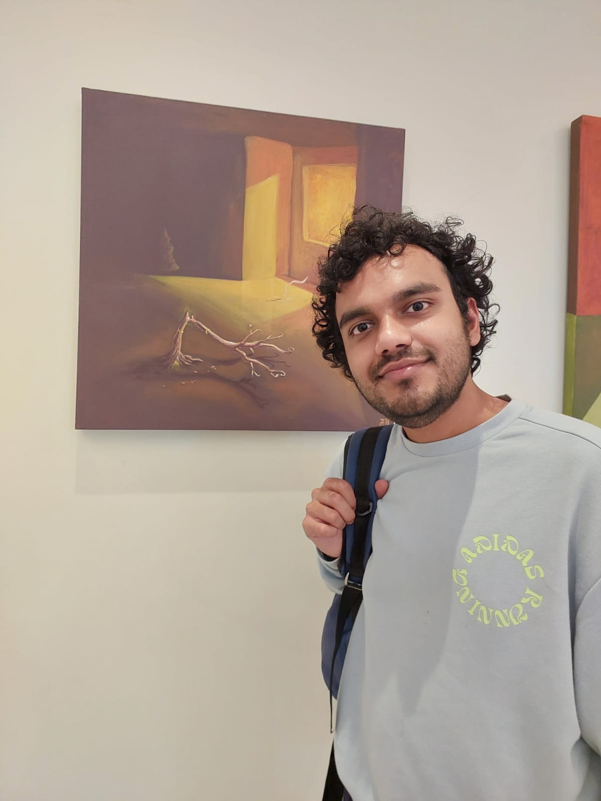

Algoverse · Research Mentor
I guide five Algoverse teams from research questions to experiments and papers, across uncertainty quantification, interpretability, and alignment. Three mentored projects were accepted at NeurIPS 2026 workshops.
I’m a Research Engineer at Citadel AI in Tokyo, where I perform frontier-model evaluations across healthcare, safeguard and cybersecurity domains, in collaboration with Japan AISI, Cabinet Office & IPA. I also help Japan AISI to strategize their research macro-strategy for upcoming years focusing on international collaboration through the inter-AISI network.
My broader research spans swarm collective metacognition, multi-agent safety, technical AI governace, and international AI verification, particularly the role of Middle Powers in verification and multilateral coordination.
I also help new researchers interested in AI safety and AI governance turn questions / ideas into experiments and papers: mentoring teams at Algoverse, teaching technical AI safety (ARENA curriculum) through TARA, and leading research teams on model metacognition and technical AI governance at Shiba AI Lab (Tokyo)

Selected papers from the last year :)
V. Elluru, A. Singh, R. Aguero, Ajay Agarwal, D. Das, H. Paul
ICML Mechanistic Interpretability Workshop, 2026
Accepted / in press
arXivAjay Agarwal, T. Hasegawa
10th International Conference on Machine Learning and Soft Computing · Osaka, Japan
Communications in Computer and Information Science (CCIS), Springer
Accepted / in press · Best Paper Award
Ajay Agarwal, T. Hasegawa
8th International Conference on Big Data and Machine Learning · Kanazawa, Japan
Journal of Advances in Information Technology
Accepted / in press
R. Halder, E. Li, R. Bala, I. Kothari, Ajay Agarwal
NeurIPS 2026 PreTrain2PostTrain & VLM4RWD workshops
Accepted
S. Goyal, J. Kalfus, Ajay Agarwal
NeurIPS 2026 Linguistic Principles for Foundation Models Workshop
Accepted
C. Brien, L. Meng, Ajay Agarwal
NeurIPS 2026 VerifyAgents & EvoRobust workshops
Accepted
I guide five Algoverse teams from research questions to experiments and papers, across uncertainty quantification, interpretability, and alignment. Three mentored projects were accepted at NeurIPS 2026 workshops.
I teach ARENA to 100+ participants across Tokyo, Taipei, and Hong Kong, and mentor 14-week safety projects. A mentored project on evaluating Chinese frontier labs received the cohort’s Best Project Award.
I lead Shiba AI’s model metacognition and technical governance research teams.
Japan’s frontier AI governance trajectory, informed by stakeholder interviews and collaboration with a MIRI governance researcher and Japanese AI safety communities.
Confidence and uncertainty elicitation through post-decision wagering: testing whether reported confidence tracks performance.
Hardware verification and trusted execution environments for international AI verification regimes, including how Japan and Singapore could support confidence in future bilateral and multilateral pause agreements.
Collective metacognition and influence cascades in agent swarms, including metacognitive control monitors for detecting reward hacking.
I volunteer and co-lead PauseAI and ControlAI community efforts in Japan, help build Japan’s first PauseAI chapter, and coordinate Japanese-language safety outreach with ALIGN Hub.
Reading groups, research discussions, and technical AI safety outreach in Japan.
MSc in Information Science, University of Fukui (2023–2025), MEXT scholar. Thesis: Causal Representation Learning in Causal Set Theory and Bandit Algorithms, supervised by Tomoyuki Yamakami. Soon after, I started my PhD in Information Science at University of Fukui, on "dmPFC localization games for strategic deception detection in frontier models", supervised by Tatsuhito Hasegawa, at the Hasegawa Lab. I quit after 6 months due to lack of funds, and transitioned to industry